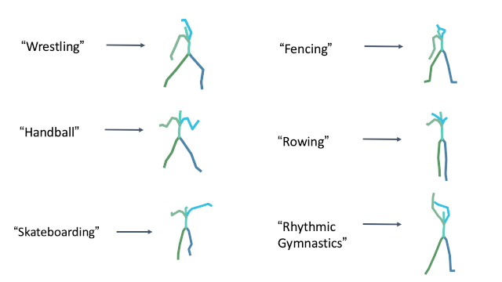
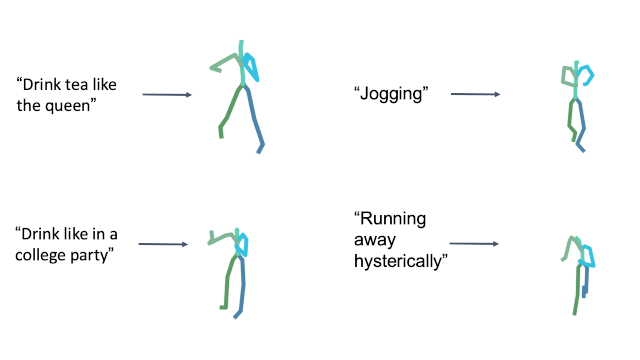
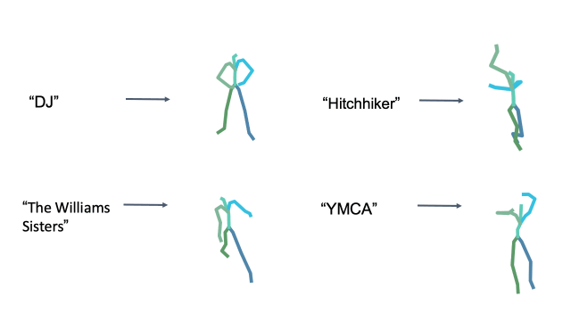
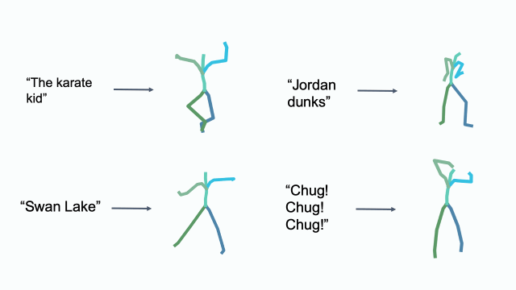
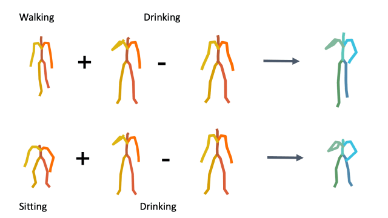
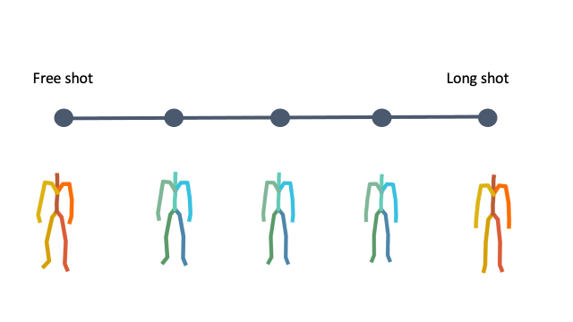
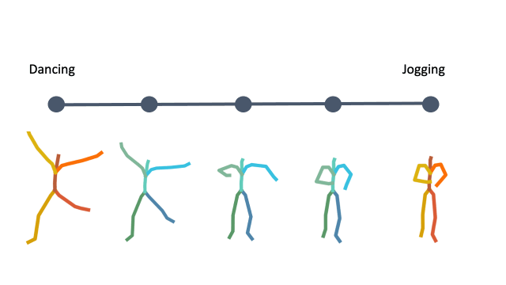

Abstract
We introduce MotionCLIP, a 3D human motion auto-encoder featuring a latent embedding that is disentangled, well behaved, and supports highly semantic textual descriptions. MotionCLIP gains its unique power by aligning its latent space with that of the Contrastive Language-Image Pre-training (CLIP) model. Aligning the human motion manifold to CLIP space implicitly infuses the extremely rich semantic knowledge of CLIP into the manifold. In particular, it helps continuity by placing semantically similar motions close to one another, and disentanglement, which is inherited from the CLIP-space structure. MotionCLIP comprises a transformer-based motion auto-encoder, trained to reconstruct motion while being aligned to its text label's position in CLIP-space. We further leverage CLIP's unique visual understanding and inject an even stronger signal through aligning motion to rendered frames in a self-supervised manner. We show that although CLIP has never seen the motion domain, MotionCLIP offers unprecedented text-to-motion abilities, allowing out-of-domain actions, disentangled editing, and abstract language specification. For example, the text prompt "couch" is decoded into a sitting down motion, due to lingual similarity, and the prompt "Spiderman" results in a web-swinging-like solution that is far from seen during training. In addition, we show how the introduced latent space can be leveraged for motion interpolation, editing and recognition.
How does it work?
MotionCLIP is a 3D motion auto-encoder that induces a latent embedding that is disentangled, well behaved, and supports highly semantic and elaborate descriptions. To this end, we employ CLIP, a large scale visual-textual embedding model. Our key insight is that even though CLIP has not been trained on the motion domain what-so-ever, we can inherit much of its latent space's virtue by enforcing its powerful and semantic structure onto the motion domain. To do this, we train a transformer-based auto-encoder that is aligned to the latent space of CLIP, using existing motion textual labels.
In other words, we train an encoder to find the proper embedding of an input sequence in CLIP space, and a decoder that generates the most fitting motion to a given CLIP space latent code. To further improve the alignment with CLIP-space, we also leverage CLIP's visual encoder, and synthetically render frames to guide the alignment in a self-supervised manner . As we demonstrate, this step is crucial for out-of-domain generalization, since it allows finer-grained description of the motion, unattainable using text.
Text-to-Motion
Text-to-Motion is performed at inference time, using the CLIP text encoder and MotionCLIP decoder, without any further training. Even though not directly trained for this task, MotionCLIP shows unprecedented performance in text-to-motion, dealing with explicit descriptions, subtle nuances and abstract language.
Olympic sports
Style in free text
Cultural References
Cultural References
Editing in Latent Space
To demonstrate how disentangled and uniform MotionCLIP latent space is, we experiment with latent-space arithmetic to edit motion. These linear operations allow motion compositionality - the upper body action can be decomposed from the lower body one, and recomposed with another lower body performance. Style can be added by simply adding the vector of the style name embedding. These two properties potentially enable intuitive and semantic editing even for novice users.
In addition, linear interpolation between two latent codes yields semantic transitions between motions in both time and space. This is a strong indication to the smoothness of this representation.
Composition
Latent style transfer

Interpolation
Interpolation
Action Recognition
Finally, we further demonstrate how well our latent spaces is semantically structured. We show how combined with the CLIP text encoder, MotionCLIP encoder can be used for action recognition. We follow BABEL 60-classes benchmark and train the model with BABEL class names instead of the raw text. At inference, we measure the cosine distance of a given motion sequence to all 60 class name encodings and apply softmax, as suggested originally for image classification. We compare Top-1 and Top-5 accuracy of MotionCLIP classifier to 2s-AGCN, as reported by BABEL. As can be seen, this is another example where our framework performs similarly to dedicated state-of-the-art methods, even though MotionCLIP was not designed for it.